這本手冊怎麼讀： 第 01～03
章是第一次使用時的準備工作，做過一次就不必再看；第 04～09
章是每一集都會走一遍的正式流程，照順序做即可；字幕相關的細節全部集中在第
06 章。附錄放檔案位置與故障排除，遇到狀況再回頭查。
目錄
開始之前
這是一套跑在你自己 Mac 上的 podcast
剪輯工具。它把「轉字幕、改字幕、決定什麼時候切鏡頭、輸出成片」這四件事收在同一個畫面裡，全部在本機運算，不需要任何雲端金鑰，素材也不會被上傳出去。
它幫你做什麼
工作
工具做的事
你要做的事
轉字幕
用本機的語音辨識引擎把整集聽成逐字稿，切成一張張字幕卡
按一次按鈕，然後等
字幕編輯
提供逐卡編輯、切句、合併、刪除、錯字替換、時間微調
逐卡看過去、修錯字、修斷句
鏡頭
依講者自動推薦全景／特寫的切換點，並畫成一條分布尺
抽查幾個切點、必要時手動改
輸出
把影片、字幕、片頭片尾、加速與去空拍一次合成出來
選好選項，按開始，等它跑完
開工前要準備的素材
素材
必要性
說明
錄影或錄音母帶
必要
整集的主檔。沒有它就無法轉字幕，也沒有畫面可以合成
第二機位影片
選用
有兩機位才需要，用來做全景／特寫切換
分軌錄音（每支麥克風各一軌）
選用
有分軌才能自動標出「這句是誰講的」
片頭、片尾音樂、片尾卡
合成時必要
全站共用，在儀表板的設定裡指定一次就好
浮水印圖檔
選用
沒有也能出片
三個先懂會少走很多冤枉路的觀念
一、一集就是一個資料夾。 所有東西——母帶、字幕、成品——都放在同一個資料夾底下。工具不會把檔案搬到別的地方，你隨時可以用
Finder 打開來看。
二、你在畫面上編輯的字幕永遠只有同一份。 無論是哪一種方式產生的字幕，最後都會寫成同一個檔案
_final_v2.srt；編輯器上的字幕卡讀的也是它。這代表「重新轉一次字幕」會把你手改過的內容整個蓋掉。
三、講者是誰，是用麥克風音量比出來的，不是聽出來的。 所以只有分軌錄音的集數才有講者標；而且重新轉一次字幕並不會讓講者標變準——它根本不是語音辨識產生的。
名詞對照
名詞
意思
集
一期節目，對應硬碟上的一個資料夾
母帶
還沒剪過的原始錄影／錄音
字幕卡
畫面上一張一張的字幕，每張有進出時間與一句話
講者標
字幕卡上的「講者 1／2／3」，標示這句是誰說的
詞庫
轉字幕之前 先告訴引擎的專有名詞（人名、藝名、品牌名）
字典
轉字幕之後 用來把錯字整批換成正字的對照表
分軌
每支麥克風各錄一個音檔，用來判斷講者
開啟 App 與儀表板
這個 App
沒有自己的視窗，它啟動後會在你的電腦背景跑一個小網站，再用預設瀏覽器把畫面打開。所以你看到的操作介面是一個瀏覽器分頁，而不是傳統的
Mac 視窗。
步驟 1 啟動 App
點擊位置 從「應用程式」資料夾或 Launchpad 點兩下
App 圖示。
達成效果 幾秒後預設瀏覽器會自動打開一個分頁，顯示集數列表 （也就是儀表板）。
功能限制 關掉瀏覽器分頁不等於 關掉程式；反過來說，程式在完全閒置 90
秒後會自己結束。要立刻完全關閉，用 ⌘Q 。
步驟 2 看懂集數列表
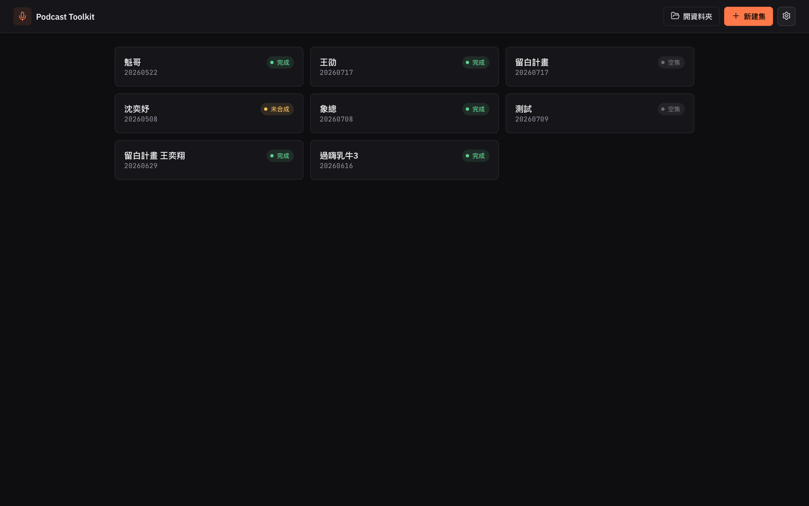
圖 01
儀表板。每一集一張卡片，右上角三顆按鈕由左到右是
開資料夾 、新建集 、齒輪的設定 。
點擊位置 點任一張集卡片，就會進入該集的編輯器。
達成效果 卡片上的狀態標記告訴你這集走到哪一步：空集 、未轉字幕 、未合成 、完成 、損毀 。
功能限制 顯示損毀 通常不是檔案真的壞掉，而是程式讀不到那個資料夾（例如它放在「桌面」「文件」「下載」這類受
macOS 保護的位置而尚未授權）。處理方式見附錄 B。
步驟 3 第一次使用先把設定填好
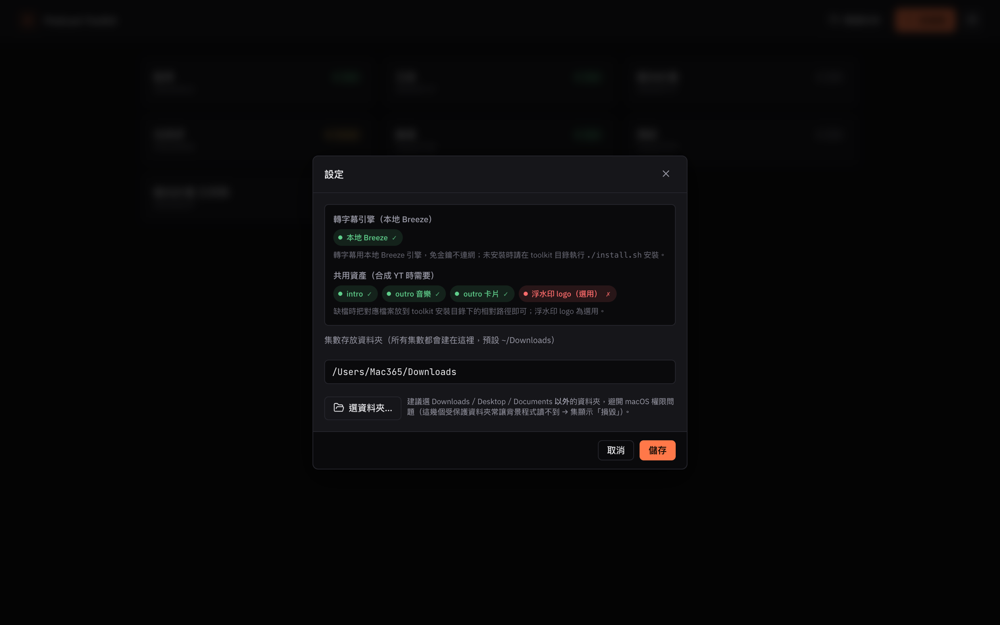
圖 02 設定視窗。上半是唯讀的狀態檢查（轉字幕引擎（本地 Breeze） 、共用資產（合成 YT 時需要） ），下半是唯一要你填的欄位。
點擊位置 右上角齒輪 → 在集數存放資料夾（所有集數都會建在這裡，預設 ~/Downloads） 欄位直接輸入路徑，或按選資料夾… → 按儲存 。
達成效果 之後所有新建的集都會建在這個資料夾底下，不會隨著你當下開哪一集而散落各處。
功能限制 上半部兩個狀態只是檢查結果，不能點 ；缺共用資產時要自己把檔案補到指定位置，這裡沒有「選檔案」按鈕。集數存放資料夾只能設一個。
看到「App 已更新，目前執行的是舊版本」的橫幅時： 照著它說的做——按 ⌘Q 完全結束 App
再重新打開。畫面沒重開之前，你操作的仍是舊版程式。
建立一集、放進素材
一集的生命週期從「建立一個空資料夾」開始。建立完之後，你要自己用
Finder 把母帶放進去——工具不會幫你找檔案，也不會複製檔案。
步驟 1 建立新的一集
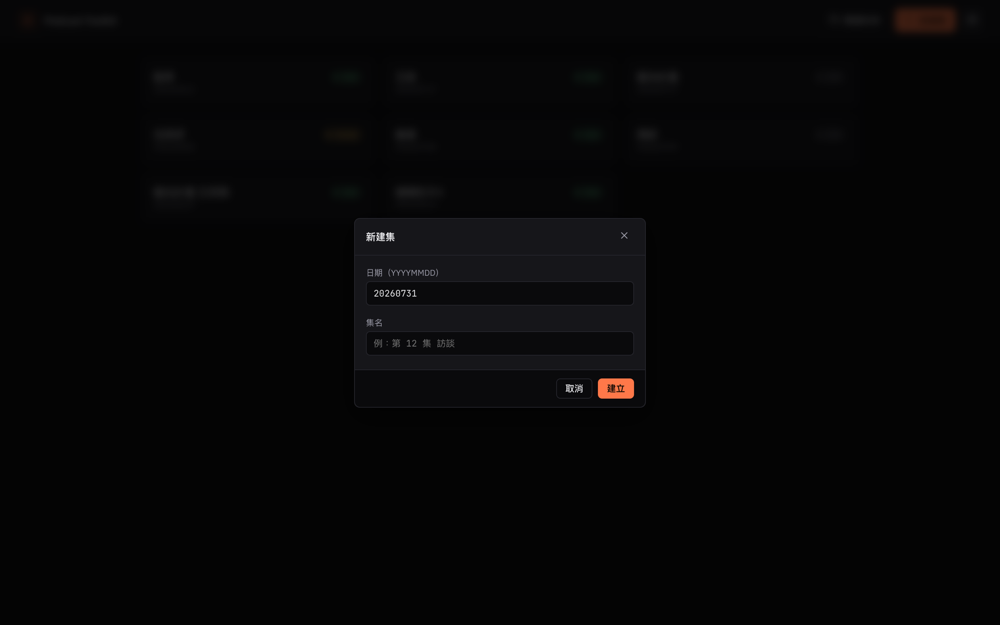
圖 03 新建集 視窗。日期（YYYYMMDD） 會自動帶入今天，集名可留空。
點擊位置 儀表板右上角新建集
→ 確認日期、填入集名（例如「第 12 集 訪談」）→ 按建立 。
達成效果 在你設定的集數存放資料夾底下建立一個以「日期＋集名」命名的資料夾，並自動把畫面切到這一集的編輯器 。
功能限制 建立的位置固定是設定裡的集數存放資料夾，這個視窗不能改路徑。已經存在的同名資料夾會建立失敗，錯誤訊息會顯示在視窗下方。
步驟 2 把素材放進母帶資料夾
點擊位置 不在程式裡操作。用 Finder
打開剛剛建立的集資料夾，把檔案拖進 01_母帶/。
達成效果 回到編輯器重新整理後，這些檔案就會出現在畫面下方抽屜的專案檔案 分頁，可以拿來預覽或轉字幕。
資料夾
放什麼
01_母帶/原始錄影、錄音、第二機位、分軌音檔——你只需要動這一個
03_成品/字幕檔與最後合成出來的影片、音檔，由工具自己寫入
episode.yaml
這一集的所有設定（裁切、字級、刪除的段落、鏡頭…）。編輯器按儲存時寫的就是它
已經有現成的集資料夾？ 不用新建。回儀表板按開資料夾 選那個資料夾即可；如果它還沒有被工具初始化過，會先跳出確認視窗問你要不要建立必要的子資料夾，按確認就好。
編輯器介面地圖
編輯器是你之後 90%
時間會待著的畫面。它是一個固定的三段式版面：上面一排工具列，中間左邊影片、右邊字幕卡，下面一個可以收合的抽屜。先認得這五塊，後面的章節就都看得懂。
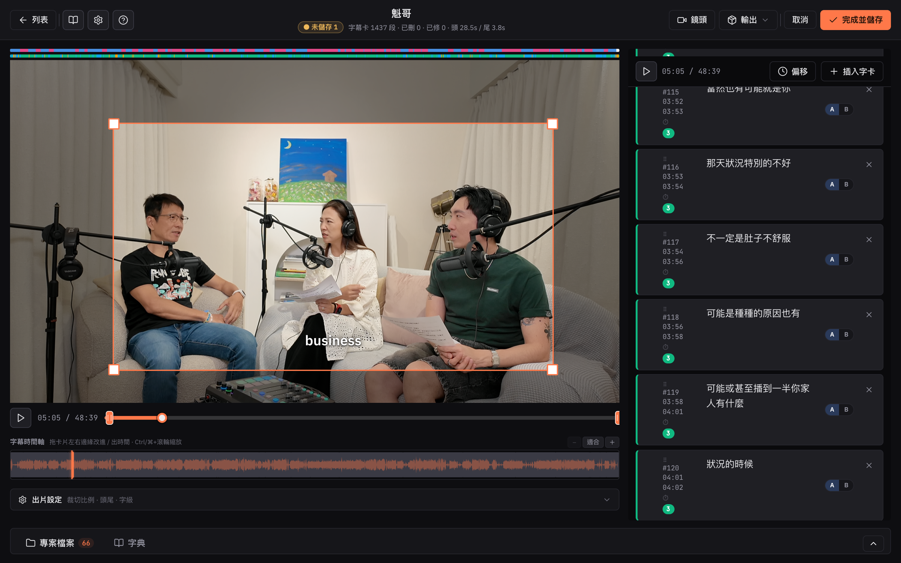
圖 10
編輯器全貌。左上是影片與字幕時間軸，右邊整條是字幕卡，最右側收著鏡頭與輸出設定面板。
區域
位置
負責什麼
詳見
上排工具列
最上方一整條
回集數列表、詞庫、設定、快捷鍵、儲存
本章
影片區
左上
預覽、定位、頭尾修剪、裁切比例、字級
第 07、08 章
字幕時間軸
影片正下方
用長條看整集字幕分布、拖曳改進出時間
第 06 章
字幕卡區
右側整條
逐卡改字、切句、合併、刪除、改時間
第 06 章
底部抽屜
畫面最下方
專案檔案（轉字幕的入口）與字典
第 05、06 章
上排工具列
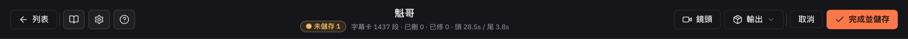
圖 11 上排工具列。左邊 由左到右是列表 、詞庫、設定、快捷鍵四顆；中間 是集名與這一集的統計；右邊 是鏡頭 、輸出 、取消 、完成並儲存 。
列表 ：回到儀表板。它不會幫你存檔 ，有未儲存的修改請先按完成並儲存 。
詞庫按鈕（提示文字為「詞庫（教轉錄引擎正確寫出人名、品牌名）」）：轉字幕之前 用的專有名詞表，見第
05 章。
設定按鈕：選轉字幕引擎，見第 05 章。
快捷鍵按鈕（提示文字為「鍵盤快捷鍵（按 ?
開啟）」）：叫出快捷鍵清單。
中間的集名與統計 ：集名下面那行寫著字幕卡 N 段 · 已刪 N · 已修 N · 頭 N 秒 / 尾 N 秒 ，是這一集目前的狀態摘要。左邊的● 未儲存 N 是還沒存檔的修改筆數，沒有未存的修改時不會出現。
鏡頭 ：開啟鏡頭設定視窗，用來登記第二支攝影機並對齊兩支影片，見第 07
章。
輸出 ：開啟輸出設定與合成，也就是「把成品做出來」的入口，見第 08、09
章。
取消 ：不儲存直接回儀表板。有未存的修改時會先跳出未儲存的修改會丟失，確定取消？ 讓你確認，按下去這一輪的修改就全部丟掉 。
完成並儲存 ：把所有修改寫進這一集的設定與字幕檔。
影片區
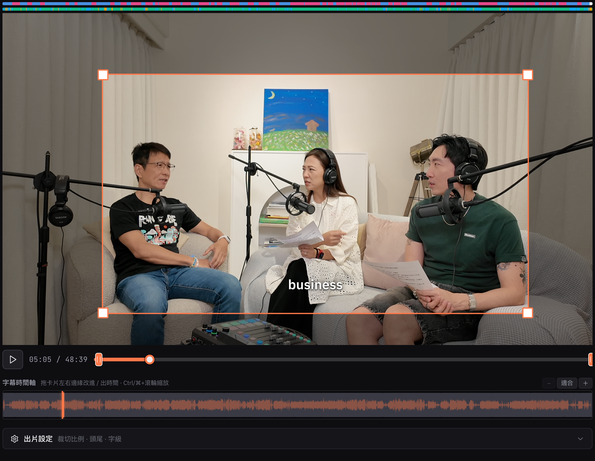
圖 12
影片區。畫面上方兩條細長的尺分別是整集的鏡頭分布與講者分布（這兩條都要符合條件才會出現 ，見下方說明）；下方是播放列，兩端的把手用來設定成片的頭尾，再往下是字幕時間軸。
鏡頭尺 （提示文字為「整集 A/B 鏡頭分布；hover
看段落時間」）：一眼看出整集切了幾次鏡頭、有沒有一路都沒切。只有登記過第二支攝影機、而且已經有字幕卡的集才會出現 ；單機集看不到這條。
講者尺 （提示文字為「整集講者分布（分軌集）」）：只有分軌集才會有內容 。
播放列 ：拖曳定位；滑鼠移上去會顯示目標時間，用鍵盤
← → 可微調。
頭尾把手 ：拖曳或用鍵盤 ← → 微調（按住
Shift 一次 0.5 秒、Cmd 一次 1 秒）。
影片區下方收著一個出片設定 摺疊區（提示文字為「裁切比例 · 頭尾 ·
字級」），裡面才是設頭設尾、裁切比例、字級這些控制項，見第 08 章。
顯示「這集還沒有主影片」： 代表母帶資料夾裡找不到可以當主畫面的檔案。把錄音或影片放進
01_母帶/ 再回來。純錄音的集數也會走同一條路。
字幕卡區
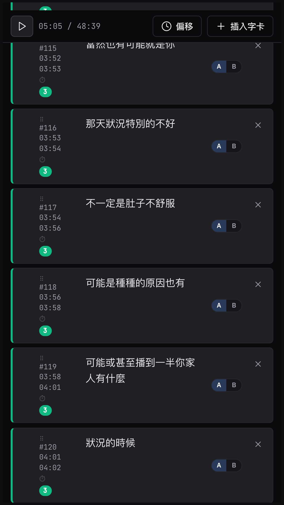
圖 13
字幕卡列表。上方是播放控制與偏移 、插入字卡 ，下面是一張張可以直接打字的卡片。
單張卡片的每一個元素代表什麼、可以怎麼操作，是第 06
章的主題，這裡先記得一件事：字幕卡是唯一可以直接改字的地方 ，時間軸與影片區都只能改時間，不能改文字。
字幕時間軸
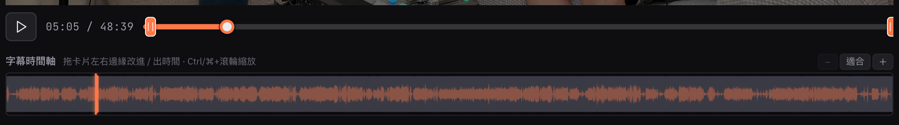
圖 15 上排是影片的播放列（05:05 / 48:39 ）；下方整條橘色的是字幕時間軸 ，標題旁就寫著操作方式拖卡片左右邊緣改進 / 出時間 · Ctrl/⌘+滾輪縮放 ，右邊的− 、適合 、＋ 控制縮放。
圖上這一集有 48
分鐘，整段縮在一個畫面時單張卡窄到看不出來，所以你看到的是一整條音訊波形加一條直立的播放位置線。要拖某一張卡的邊緣，得先用 ＋ 或
⌘ 加滾輪放大到看得見那張卡為止 ；適合 是縮回整集全覽。
點擊位置 放大之後，拖曳卡片方塊的左右邊緣 改這張卡的進／出時間；按住
Ctrl 或 ⌘
加滾輪縮放。
達成效果 適合用來抓「字幕還沒消失下一句就進來了」「這段空白太久」這類節奏問題。
功能限制 時間軸只能改時間，不能改文字、不能切句也不能刪卡。
底部抽屜
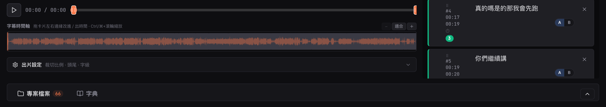
圖 16
抽屜收合時只剩一條標籤列，右邊的按鈕在收合 與展開 之間切換。
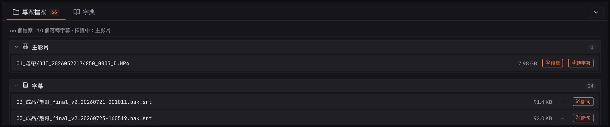
圖 17
專案檔案 分頁。檔案依用途分成主影片／字幕／合成輸出／母帶／工作檔／其他幾區，每個檔案右邊有預覽 與動作按鈕。
點擊位置 點抽屜右側的展開 ，再切到專案檔案 或字典 分頁。
達成效果 專案檔案 是轉字幕的入口 （第 05
章）；字典 是錯字整批替換 的地方（第 06
章）。頂端那行摘要會告訴你這集有幾個檔案、其中幾個可以轉字幕、目前預覽的是哪一個。
哪些東西是「有條件才會出現」的
第一次用的時候很容易以為某個功能不存在，其實只是條件還沒滿足。下表整理常見的幾個。
介面元素
什麼時候才看得到
字幕卡區的偏移 按鈕
這一集已經有字幕卡
講者分布尺、字幕卡上的講者標
這一集是分軌集，而且已經轉過字幕
鏡頭分布尺
已經登記過第二支攝影機，而且這一集已經有字幕卡
影片下方的字幕時間軸
這一集已經轉過字幕、而且有字幕卡
「N 張可疑空拍卡」工具列
系統標出了可疑的空拍卡（紅卡）
「N 張待複查卡」工具列
系統標出了半句／可疑字／空拍等待複查卡
「這集還沒有主影片」
母帶資料夾裡沒有可當主畫面的檔案
畫面最上方的更新橫幅
App 已更新，但你現在跑的還是舊版
轉字幕
這一章從「一集只有影片」走到「右邊出現一整排字幕卡」。整段運算都跑在你自己的電腦上，不需要任何雲端帳號、不需要金鑰、不用連網。代價是慢——一集通常要跑上幾十分鐘，而且電腦愈慢跑愈久。畫面上會顯示進度百分比，以那個為準；中間請不要關掉視窗。
順序很重要：先填詞庫，再轉字幕。 來賓藝名、品牌名、節目術語如果沒有事先填進詞庫，轉錄引擎幾乎一定會寫錯字，而且事後補填不會回頭修正已經轉好的字幕 。所以步驟
1 不是可選的。
步驟 1 開集就先填詞庫
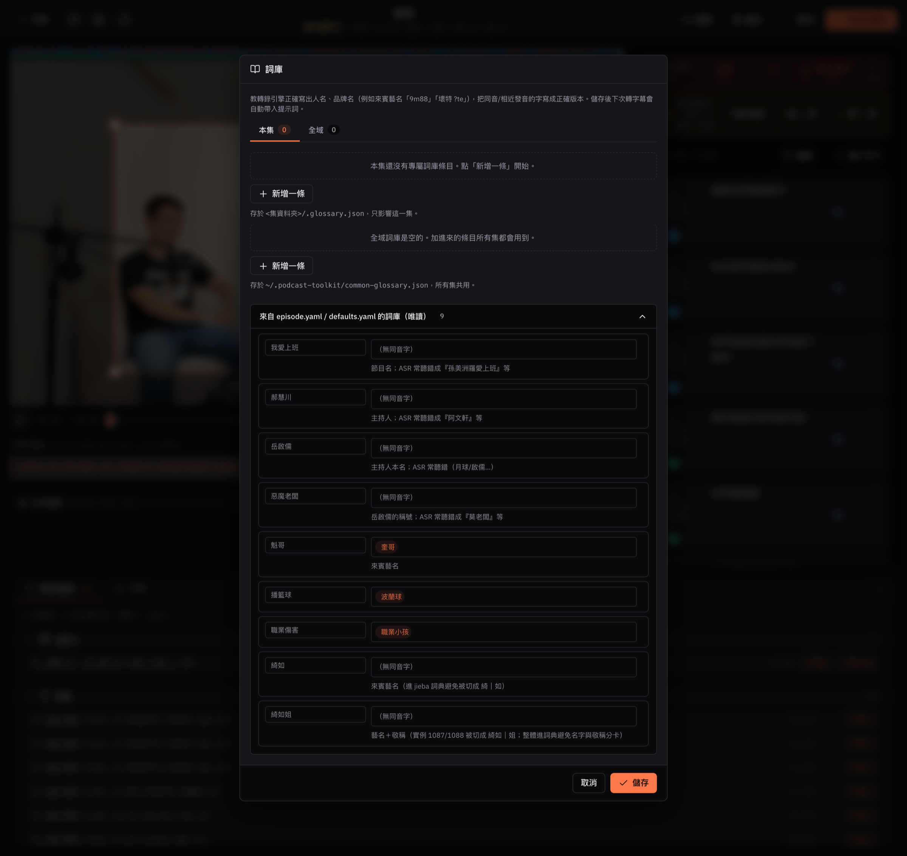
圖 24 詞庫 視窗。預設停在本集 分頁；建檔時就寫好的、還有全部集共用的預設詞，收在下面那塊來自 episode.yaml / defaults.yaml 的詞庫（唯讀） 區塊裡。那一塊預設是收起來的 ，點標題那一列才展開（圖上是展開後的樣子，這一集有
9 條），只能看、不能改。
點擊位置 編輯器上排工具列左段的詞庫 按鈕（滑過會顯示「詞庫（教轉錄引擎正確寫出人名、品牌名）」）→
在本集 分頁按新增一條
→ 左欄填正確寫法 、右欄填轉錄引擎可能誤聽成（Enter / 逗號分隔）
→ 按儲存 。
達成效果 這些詞會在下一次轉字幕時當成提示詞交給轉錄引擎，讓它優先寫出你指定的寫法。本集 分頁的內容存在集資料夾裡，只影響這一集。
功能限制 三個，每一個都會讓你白填：
只填左欄等於沒填。 真正產生替換效果的是「可能誤聽成 →
正確寫法」這組對應。右欄空著，這一條就是零條替換規則。
詞庫沒有回溯能力。 字幕轉完之後才加詞，對已經產生的字幕卡完全沒有作用，工具裡也沒有「把詞庫套到現有字幕」這種功能。要嘛重轉一次（會蓋掉你的手改），要嘛用第
06 章的字典 逐字取代。
「全域」分頁的詞，本地轉錄引擎吃不到。 全域 分頁存的是所有集共用的詞，但它只有在走雲端轉錄時才會被帶上。你在本機用內建引擎轉字幕（也就是這本手冊講的路線）時，只有本集 分頁與唯讀區的詞會生效。要確定生效就填在「本集」。
步驟 2 打開轉字幕視窗
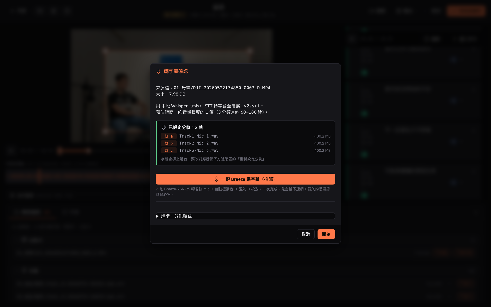
圖 20
轉字幕 視窗。最上面那塊會先告訴你系統認出了哪幾個音檔，中間是主要按鈕一鍵 Breeze 轉字幕（推薦） 。
點擊位置 畫面下方抽屜的專案檔案 分頁 → 找到你要轉的影片或音檔那一列 → 按該列右側的轉字幕 。
達成效果 視窗上緣的音檔偵測結果 會告訴你系統認出了什麼，共有四種顯示：已辨識到音檔：分軌 N 軌、混音 N 個 、已設定分軌：N 軌 、沒有偵測到外接音檔 、還在讀取音檔清單中… 。
功能限制 軌別是看檔名猜的 ——檔名要含有
Track1、Mic 2
這類字樣才會被認成分軌，否則一律當混音。認錯的話不會有錯誤訊息，只會默默用混音檔去轉。
步驟 3 按下一鍵轉字幕，然後等
點擊位置 一鍵 Breeze 轉字幕（推薦） →
會先跳一個確認：「轉錄前確認：來賓姓名、品牌名、節目術語已加入詞庫了嗎？」→
確定之後才真的開始。
達成效果 畫面會切成進度顯示，依序跑完四段：轉錄 （最久）→
匯入字幕 （把講者標籤抽出來另存）→
本地校對 （同音字、術語）→ 重新斷句 。跑完會顯示完成 與寫出的檔名，編輯區自動重新載入，右邊就出現字幕卡了。
功能限制 四點：
轉字幕會覆寫主字幕檔。 這一集之前所有的字幕內容——包括你已經按過儲存的手動修改——都會被新的一份蓋掉。
過程中不要關視窗。 介面自己也會提醒「請保留分頁、不要關閉」。
最後一段「重新斷句」失敗時是靜默的。 畫面照樣顯示完成，只是斷句沒有重整。看到字幕一句特別長、或斷得很碎，通常就是這一段沒跑成功。
本地校對需要另外裝一個命令列工具才會生效。 沒裝的話這一段會直接跳過，不會報錯，你只會覺得「校對好像沒做事」。
分軌轉錄：讓字幕標出講者
如果錄音時每位講者各有一支麥克風、各自存成一個檔，工具可以判斷每一個字是誰講的，字幕卡左邊就會出現講者標籤。這一段是選用的——單一支混音檔一樣可以轉出字幕，只是沒有講者。
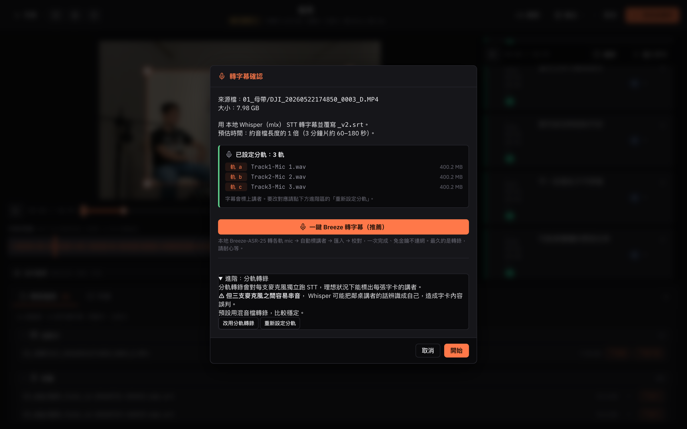
圖 21 轉字幕視窗裡的進階：分軌轉錄 摺疊區。展開後會看到串音警告，以及設定並啟用分軌轉錄 按鈕。
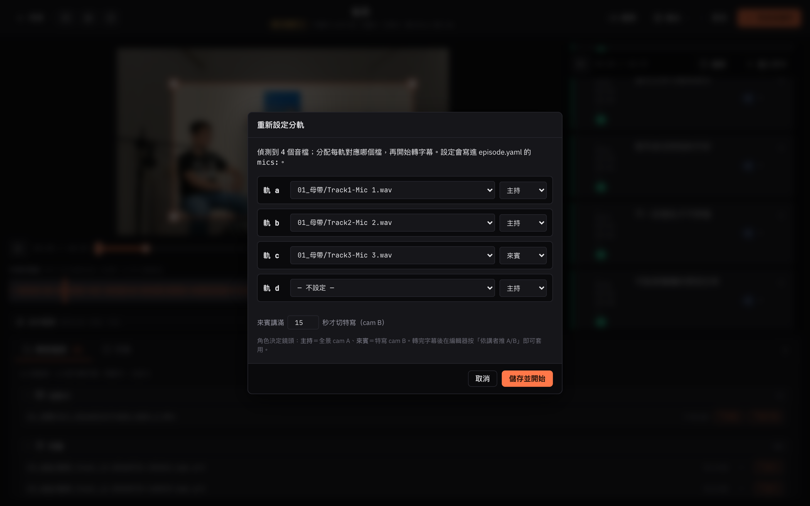
圖 23
設定分軌 視窗。逐軌指派「這一軌是哪個檔、這個人是主持還是來賓」。
點擊位置 轉字幕視窗下方展開進階：分軌轉錄
→ 設定並啟用分軌轉錄 → 在設定分軌 視窗逐軌指派檔案與角色 → 儲存並開始 。
達成效果 對應關係寫進這一集的設定，之後轉出來的字幕卡會帶講者標籤，合成時講者還會有各自的顏色。角色（主持／來賓）另外決定第
07 章的自動鏡頭切換：主持待在全景、來賓連續講滿設定秒數才切特寫。
已經轉過一次，只想補其中一軌？ 展開進階區按改用分軌轉錄 會開分軌轉錄 視窗（圖
22），裡面每一軌都標了已轉過 或未轉 ，已轉過的預設不勾以免誤覆寫，也可以按只選未轉 一次選好。
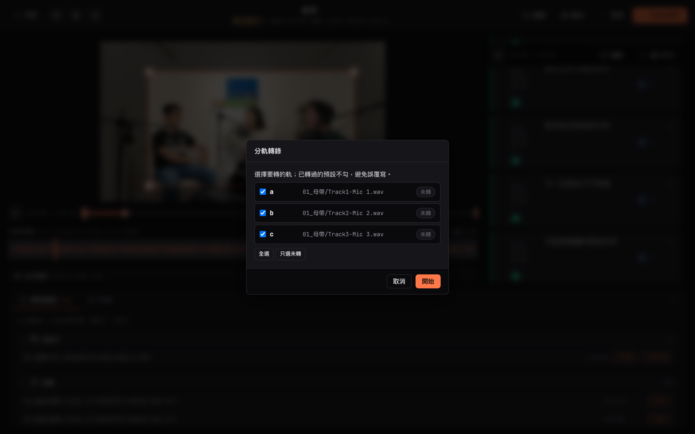
圖 22
分軌轉錄 視窗。注意下方那行警告：⚠ 已轉過的 SRT 將會被覆寫（舊版會自動備份成時間戳檔） 。
講者標是「比音量」比出來的，不是聽出來的。 工具的判斷方式是：同一個瞬間哪一支麥克風的音量最大，就算誰在講。這件事有兩個直接後果——第一 ，重新轉一次字幕不會 修正標錯的講者，因為用同一份音檔算同一套音量，結果一模一樣，純粹白等；第二 ，編輯器裡沒有任何地方可以手動改講者 （卡片上那個講者標籤是唯讀的）。這是目前的設計限制，第
06 章會再提一次。
轉錄引擎與共用素材的設定在哪
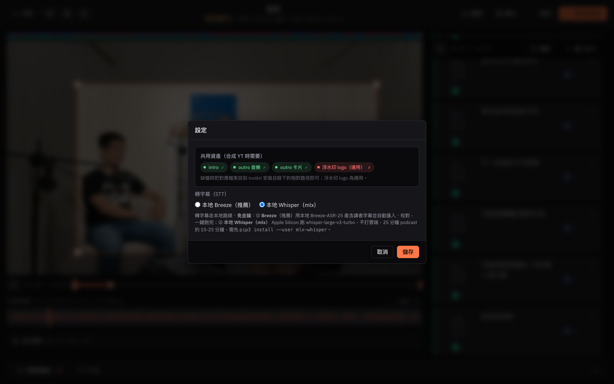
圖 26 上排工具列的設定 視窗。上半共用資產（合成 YT 時需要） 列出片頭片尾等素材有沒有到位；下半轉字幕（STT） 選轉錄引擎。
點擊位置 上排工具列的齒輪設定 按鈕。
達成效果 可以在本地 Breeze（推薦） 與本地 Whisper（mlx） 之間切換。兩者都在本機跑、都免金鑰、都不連網；差別是 Breeze
會順便標講者並自動校對，Whisper 只出字幕。
字幕編輯
這是整套工具最花時間的一章，也是最容易誤觸的一章。轉出來的字幕大約有八九成可用，剩下的要靠你逐卡看過去：改錯字、把太長的句子切開、把被切碎的句子接回來、刪掉沒有內容的段落。以下先講「怎麼做」，再講「哪幾個動作會讓你失去已經做完的工作」。
先記住這一條：切句與合併沒有按鈕，只有鍵盤。 在字幕卡的文字區裡，游標放在要切的位置按 Enter 就會把這張卡切成兩句；游標移到卡片文字的最前面按 Backspace （刪除鍵）就會把這張卡併回上一張。介面上找不到任何「切句」或「合併」的按鈕——不是壞掉，是本來就只做成鍵盤操作。
一張字幕卡上有什麼
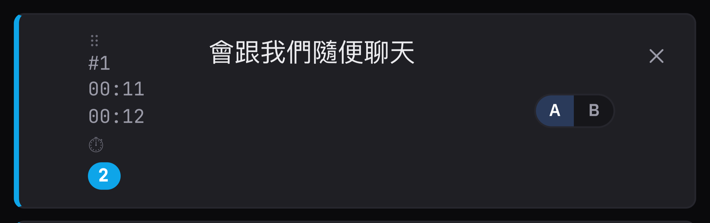
圖 14
單張字幕卡（分軌＋雙機的集）。文字區直接點下去就能打字；左欄與右側都是輔助控制項。
圖上這張卡由左到右是這些東西：
卡片上的元素
它做什麼
左上角六個點
拖曳握把。拖著它可以把整張卡移到新的時間位置
#1 這張卡在整份字幕裡的編號
00:11 與 00:12
上面是進場時間、下面是出場時間。點時間 影片會跳到這句的開頭
碼錶圖示
點它展開「時間微調列」，內容見下一段
藍色圓圈裡的數字
講者。只有分軌集才會出現 ，而且是唯讀 的，點不動也改不了（見下方紅框）
中間的文字
直接點進去改字。這是整個介面唯一能改字幕內容的地方
A ｜B
鏡頭。雙機集才會出現 ，亮起來的那一邊是這句用的鏡頭，詳見第
07 章
右上角的叉叉
把整張卡標成刪除；再點一次取消。可以反覆切換
另外三組控制項，要符合條件才會出現
它們不在圖 14 上，不是介面壞了，是這張卡剛好不符合出現條件：
控制項
什麼時候才看得到
它做什麼
時間微調列
點了碼錶圖示 才展開
⇤游標 ／游標⇥ 是「把起點／終點設成影片目前播放到的位置」；旁邊的−
＋ 一次微調 0.1 秒；還原 清掉這張卡的時間微調
待複查標記與看過 鈕
只有被判定為半句結尾 、疑似重複幻覺 或空拍的卡才有
看過 是給你自己用的閱讀進度標記，標過就淡化、退出待辦計數，不影響任何輸出
N/M 字 與百分比只有切過句的卡 才有，顯示在左欄時間下方
這一小段的秒數最多放得下幾個字、你實際放了幾個字。超過 120%
會轉紅，代表這段唸起來會喘
七種操作，各自怎麼做
下面七件事全部在字幕卡本身、或卡片區最上面那條工具列上完成，沒有另外的視窗。卡片各部位見圖 14 ，工具列見圖 13 頂端。
要做的事
怎麼做
會不會動到字幕原檔
改文字
點文字區直接打字
存檔時會寫回
切句 游標放在切點，按 Enter （沒有按鈕）存檔時會寫回
合併 游標移到卡片文字最前面，按 Backspace （沒有按鈕）存檔時會寫回
插入一張新卡
把播放位置停在要插入的地方，按字幕區上方的插入字卡
存檔時會寫回
刪除一張卡
卡片上的刪除
不動原檔 ，只記在這一集的設定裡
調某張卡的時間
先點卡片左欄的碼錶圖示，卡片下方才會展開一排時間微調工具：起
後面是⇤游標 （把起點設到目前播放位置）與− ＋ （一次 0.1 秒）；訖
後面同理，最後是還原 。一次只能開一張卡，開下一張時上一張自動收起
存檔時會寫回
改講者 做不到——介面上沒有這個功能 —
一鍵轉字幕的集：改變卡片「張數」或「順序」會讓講者標整批錯位，而且沒有任何警告。 兩份分開的檔案，靠卡片編號對在一起 的。存檔時字幕卡會依開始時間重新排序並從
1
重新編號——如果這一集是用一鍵轉字幕產生的（也就是設定裡沒有登記各軌麥克風），編號變了但講者那一份沒有跟著換，於是切點之後的講者標會整批偏掉一格。
會踩到的操作： 切句、合併、插入新卡、把時間改到造成前後順序對調。安全的操作： 純改文字、刪除卡片、用字典批次取代（未切句的卡）。怎麼避開： 先在設定分軌 裡把各軌麥克風登記好再開始編輯，講者那一份就會跟著字幕一起更新。已經編輯到一半才發現標歪了，只能重跑分軌設定與轉錄，或接受講者色不準。
登記好分軌之後還有一個小殘留： 切句切出來的新那一半 不會拿到講者標，成品裡那一句就沒有講者顏色。不會整批歪掉，但會缺一句。
刪錯不用怕。 卡片的刪除 是非破壞性的——它只是把「這一段不要」記在這一集的設定裡，字幕原檔一個字都不會少。按復原 就回來了，就算存過檔也一樣。真正會讓內容消失的是下面兩個紅框裡的動作。
「字典」和「詞庫」不是同一個東西
兩個功能都跟「用字對不對」有關，是介面上最容易搞混的一組。差別只有一句話：詞庫是轉字幕「之前」用的，字典是轉字幕「之後」用的。
詞庫 字典
在哪裡
上排工具列的按鈕
畫面下方抽屜的分頁
什麼時候用
轉字幕之前
字幕已經在畫面上之後
作用對象
轉錄引擎——教它把某個音寫成某個詞
現有的字幕卡——把某段文字換成另一段
對已產生的字幕
完全沒有作用 就是拿來改它的
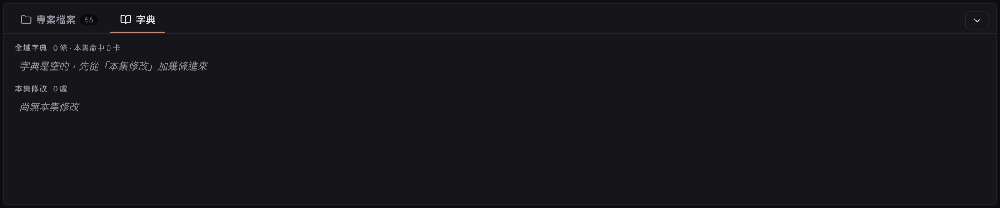
圖 18 抽屜的字典 分頁，這是還沒加過任何東西的樣子 。上半全域字典 是所有集共用的對照表，這裡是0 條 · 本集命中 0 卡 ，所以只顯示一行提示字典是空的，先從「本集修改」加幾條進來 ；下半本集修改 是你在這一集實際改過的每一處，還沒改過所以是尚無本集修改 。
點擊位置 抽屜的字典 分頁。兩排的按鈕都要等到有內容才會出現 ：全域字典有條目之後，上半才會出現全部套用 ，可以把全域字典一次套到整集；你在這一集改過字之後，下半每一條修改旁邊才會出現＋字典 ，可以把這次的修正加進全域字典，之後每一集都能用。
達成效果 一次改掉散落在整集裡的同一個錯字，不用自己一張張找。上半會顯示這本字典在本集命中幾張卡。
功能限制 已經切過句的卡會被整張跳過 ，而且介面不會告訴你跳過了哪幾張。所以順序要對：先用字典批次取代，再開始切句 。反過來做一定會漏。（已刪除的卡同樣會被跳過，這個是刻意的。）
兩排批次工具列
這兩排不是一直都在——它們只在工具真的找到對應的卡時才會出現在字幕卡區的上方。
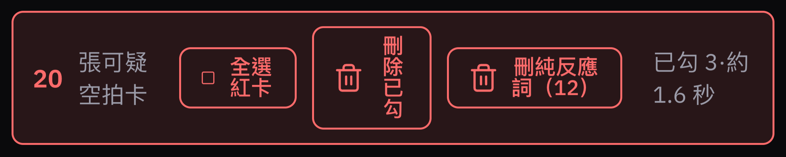
圖 41 可疑空拍卡工具列。標紅的卡通常是沒講什麼內容的空檔。
點擊位置 全選紅卡 勾起全部可疑卡 → 逐張取消掉你想留的
→
刪除已勾 。只想清「嗯」「對啊」這類純反應詞的話，按刪純反應詞 ，按鈕上會直接寫可刪幾張。
達成效果 勾選時工具列會即時顯示已勾 N·約 X 秒 ，讓你知道這一輪會砍掉多少長度。刪除一樣是非破壞性的，可以復原。
功能限制 標紅只是提示，工具不會自己動手 ，要不要刪由你決定；判斷門檻寫在共用設定裡，介面上不能調。實際輸出會比預估秒數長一點——每個刪點兩側各留了
0.15 秒緩衝。
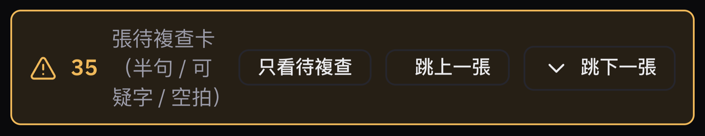
圖 42
複查工具列。把「工具覺得怪怪的」卡集中起來讓你快速掃過。
點擊位置 這一列最左邊會顯示還有幾張待複查（例如35 張待複查卡（半句 / 可疑字 / 空拍） ），右邊是三顆按鈕。按只看待複查 會把字幕卡區過濾成只剩待複查的卡，再按一次回到全部；跳上一張 ／跳下一張 在它們之間跳。
達成效果 待複查的理由會標在卡片上，常見的有半句結尾 （句子被切在一半）與疑似重複幻覺 （同一句重複出現，通常是轉錄引擎卡住了）。看完按看過 就會從清單消失。
整份字幕早了或晚了：字幕偏移
點擊位置 字幕卡區上方工具列的偏移 按鈕（圖 13
上方，時鐘 圖示那顆；別跟卡片上的碼錶搞混，那顆是開時間微調列的）→
按下去才會展開一列輸入框，在字幕偏移（秒，不改原檔） 填秒數 → 套用偏移 。
達成效果 整份字幕一起平移。正值＝字幕往後延 （現在太早）、負值＝往前提 （現在太晚）、0
或留空＝清除偏移。填的是「目前的偏移總量」，不是每按一次就累加。
功能限制 兩個都容易誤會：
它只能整份一起平移 ，修不了個別卡片對不上的問題——那要一張張調時間。
這顆按鈕只會存下偏移這一個值。 你其他還沒存的字幕修改不會 順便被存起來。按完它● 未儲存 的數字沒有歸零就是這個原因，別以為已經全部存好了。
存檔：按了什麼、留下什麼
點擊位置 上排工具列最右邊那顆橘色的完成並儲存 （圖 11 右端）。中間的● 未儲存 N 告訴你有幾處改動還沒落地——沒有未存的修改時它不會出現 ，看不到它就代表都存好了。
達成效果 所有字幕修改一次寫進字幕檔，其他設定（裁切、字級、刪除的段落、鏡頭）寫進這一集的
episode.yaml。寫入前會先把原本的字幕檔備份一份。
備份只有一份，每次存檔都會覆蓋掉上一份。 完成並儲存 時，工具會把存檔之前 的字幕複製成一個 .bak 檔放在
03_成品/。但它只留最新的一份 ——存第二次的時候，第一次的備份就被覆蓋了。也就是說你隨時可以退回「上一次存檔前」，但退不回更早。
03_成品/ 把
{集名}_final_v2.srt 複製一份、改個名字。
關於雙行字幕
兩個人接話時，讓上一句多留在畫面上一會兒、和下一句上下並排，是可以做到的，但介面上沒有開關 ，要改這一集的
episode.yaml 才能開。另外三件事先講清楚，免得你以為壞了：
點擊位置 沒有可以點的地方。要開這個功能只能到集資料夾裡打開
episode.yaml 手動改，改完存檔重新開這一集。
達成效果 兩個人接話的地方，上一句會多留在畫面上一會兒，和下一句上下並排，看起來像對話。
功能限制 三件事先講清楚，免得你以為壞了：它不會把整片都變成兩行。 實測五集的覆蓋率大約在 6.4% 到
21.3% 之間，也就是偶爾出現，不是常態。編輯器裡的預覽看不到雙行效果 ，只有實際合成出片才看得到，所以沒辦法邊調邊看。
鏡頭與對齊
這一章只有兩種情況會用到：你錄了兩台攝影機 ，或者你的聲音是用另外一台錄音設備 錄的（不是相機內建的麥克風）。只有單機、聲音就用相機收的話，整章可以跳過——相關按鈕在單機集上根本不會出現。
對齊在做什麼？ 兩台相機不會同時按下錄影鍵，外接錄音筆也不會跟相機同時開始。所以同一個瞬間，在
A 機是第 12 秒、在 B 機可能是第 9.4
秒。「對齊」就是把這個差值算出來，之後切鏡頭、換聲音才不會嘴形對不上。
鏡頭與音檔對齊視窗
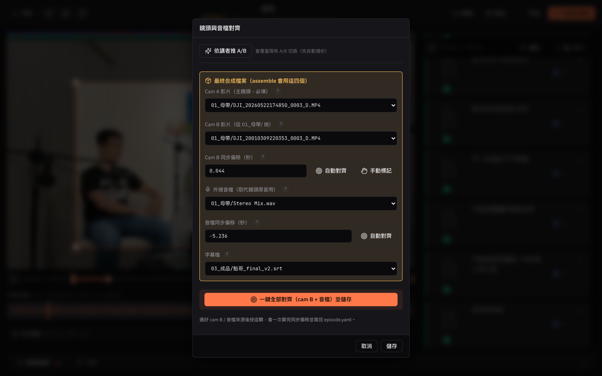
圖 30 上排工具列的鏡頭 按鈕打開這個視窗。上半決定「合成時要用哪幾個檔」，下半決定「它們怎麼對齊」。
點擊位置 上排工具列的鏡頭 。
達成效果 視窗上半的最終合成檔案 有四個下拉選單，決定合成時實際會用到哪些素材：
Cam A 影片（主鏡頭，必填） ——沒選這個不能合成
Cam B 影片（從 01_母帶/ 挑） ——留空就是單機集，整片都用 A
外接音檔（取代鏡頭原音用） ——選了之後成品的聲音會換成這一軌
字幕檔 ——決定合成時要燒哪一份字幕
自動對齊：先試這個
點擊位置 都在圖 30 那個視窗裡。中段的Cam B 同步偏移（秒） 與音檔同步偏移（秒） 各自旁邊都有一顆自動對齊 。兩個都要對的話直接按最下面的一鍵全部對齊（cam B + 音檔）並儲存 。
達成效果 工具會自己比對兩段聲音的波形，算出差幾秒並填進欄位。一鍵全部對齊 這顆會順便存檔 ，個別的自動對齊 不會。
功能限制 自動對齊靠的是兩軌聲音本身夠像。如果 B
機離得很遠、收到的幾乎只有回音，或兩段錄影的時間根本沒重疊，就會算不準或算不出來。這時候改用手動標記。
手動標記：自動對不出來時
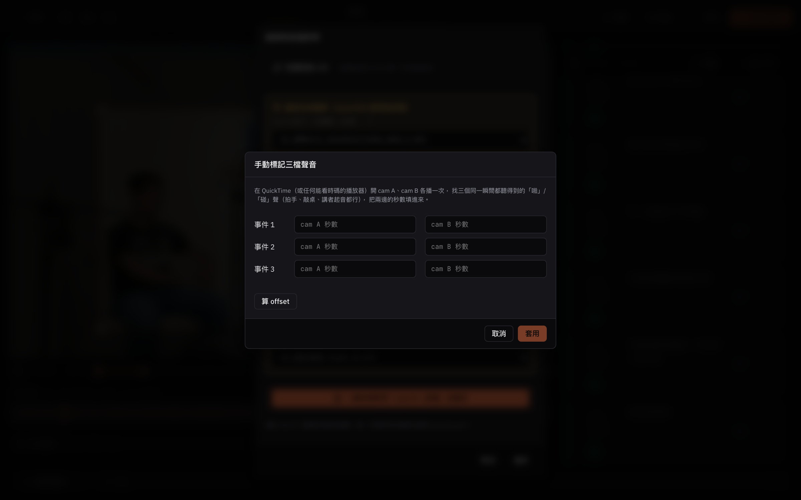
圖 25
手動標記 視窗。要填三組「同一個聲音在各檔案裡的時間」。
點擊位置 偏移欄位旁的手動標記
→ 依視窗裡的指示，用 QuickTime（或任何看得到時碼的播放器）把 cam
A、cam B
各播一次，找三個 同一瞬間都聽得到的「啪」「碰」聲，把各自的時間填進去
→
算 offset → 套用 。
達成效果 算出來的偏移會填回主視窗的欄位。三筆結果的離散程度也會顯示出來：（三筆很一致） 是最好的，（離差略大，可接受） 勉強可用，出現（離差 > 0.2s，建議重標一次） 就代表有一組標錯了，重找一次比較快。
功能限制 兩個容易漏：
要三組，少一組就算不出來 。資料明顯不合理時按鈕會擋著不讓你算。
按套用 不等於存檔。 它只把數字填回欄位，你還要回主視窗按儲存 才會落地。直接關掉視窗就白算了。
決定哪一段用哪一台
對齊只是讓兩台的時間軸對上，還要告訴工具「這一段要看誰」。做法有兩種，可以混用。
點擊位置
手動 ：每張字幕卡上都有一顆鏡頭鈕，點一下就在目前鏡頭 與切到 B 鏡頭 之間切換。自動 ：鏡頭視窗裡的依講者推 A/B ，讓工具依照「這句話是誰講的」自動安排。
達成效果 沒有特別指定的卡會沿用前一張的鏡頭，所以你只要在「要換鏡頭的那一句」上點一下就好，不必每張都設。自動推算完會告訴你已推出 N 個 A/B 切換點（可手動微調例外） 。
功能限制 依講者推 A/B 有兩個前提與一個副作用：
這一集必須已經有逐卡講者資料 （也就是跑過分軌轉錄）。沒有的話按鈕會直接告訴你需先產生逐卡講者（分軌轉錄或 Breeze 轉錄）才能推鏡頭 。
它會覆蓋掉你現有的所有 A/B 切換 。按鈕上就寫著這件事，執行前會先自動備份一份。
講者標本身不準的話（見第 06 章紅框），推出來的鏡頭就跟著不準。
輸出設定
字幕修完、鏡頭排好，接下來決定成品長什麼樣：畫面裁多寬、字多大、要不要加速、片頭片尾從哪裡開始。這些設定散在兩個地方——編輯器主畫面下方那一排，以及按下合成前跳出來的設定視窗。
主畫面下方：裁切比例 · 頭尾 · 字級
這一排預設是收起來的 ，在影片區最下面那一條：出片設定 ，後面跟著灰字裁切比例 · 頭尾 · 字級 （圖 12
最底下那一列）。點那一列才會展開。展開後改任何一項，馬上反映在上方的影片預覽裡，不用等合成就看得到。
控制項
做什麼
裁切比例
決定成品的畫面比例。選好之後在預覽畫面上拖出裁切框，沒設過時會顯示裁切框：未設定 。按智慧建議 可以讓工具先幫你抓一個。
設頭 ／設尾
把影片播到你想要的位置，按下去就把該處設為正片的開始／結束。按重設 清掉，按從頭播 回到最前面確認。
字級
字幕的大小。用旁邊的加減鈕調，每按一次動 2 ，範圍夾在
12 到 200 之間。
達成效果 字級改了以後，影片預覽上的字幕會等比例跟著變，所見即所得。
功能限制 YT
版與直式短影音版的字級分開記 ，兩邊要各調一次；改完要按完成並儲存 才會落地。字幕的左右位置（靠左／置中／靠右）沒有地方可以調。
字幕模式：燒進去，還是另外給一份
按上排工具列的輸出 按鈕（圖 11
右側，滑過會顯示「字幕模式與合成輸出」）會往下展開一個選單，最上面那一段就是字幕模式 ，往下才是合成輸出 的三顆出片按鈕。
模式
結果
什麼時候選它
燒進畫面 字幕直接印在影片上，關不掉
預設值，多數情況用這個
另存字幕檔（僅 YT，較快） 影片上沒有字幕 ，另外產一份對好時間的字幕檔給你上傳
要讓觀眾自己開關字幕。因為跳過燒字幕，輸出快很多
抽換字幕（燒指定字幕檔） 燒的是你另外指定的那份字幕，不是編輯器裡這份
字幕在別的地方修過（例如從 YouTube
下載修正後的版本），要換上去重燒
點擊位置 輸出 →
字幕 下拉選單。選抽換字幕 時，旁邊的檔案選單要一併選好要燒哪一份。
功能限制
後兩種模式只對 YT 版有效 。直式短影音平台不吃外掛字幕，一律硬燒，不受這個選項影響。
選抽換字幕 卻沒挑檔案就按合成，會被擋下來並提示抽換字幕：請先在「字幕」旁選一份字幕檔 。
另存字幕檔 模式下，成品影片畫面上真的一個字都沒有——這是正常的，不是合成失敗。
輸出純音訊（原速 MP3 ）時燒錄一律關閉，因為沒有畫面可以燒。
合成設定視窗
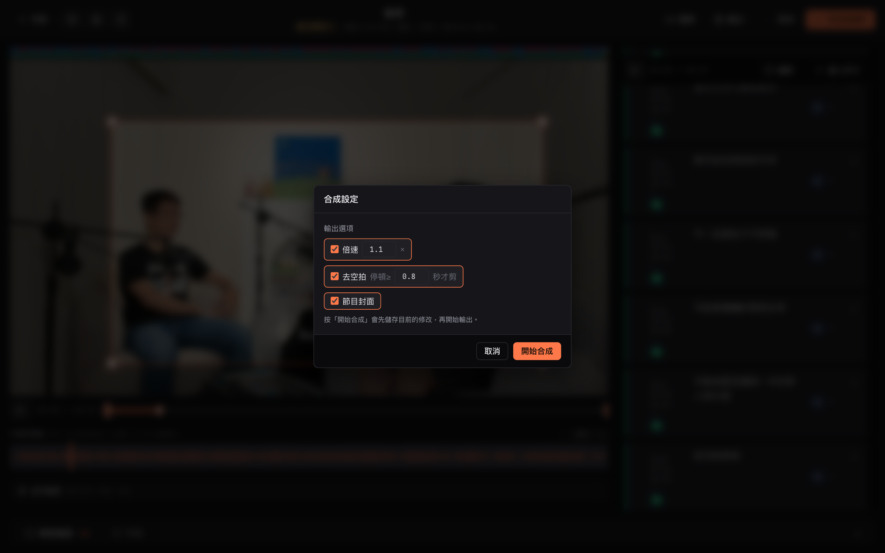
圖 31 按輸出 →
合成 YT 後跳出的合成設定 視窗，這是出片前最後一關。
選項
預設
做什麼
倍速 開啟，1.1x 整片略微加速。語速聽起來自然、片長縮短約一成，音高不會變
去空拍 開啟，0.8 秒
自動剪掉沒人講話的空檔。停頓≥ N 秒才剪 可以自己調，數字越小剪得越兇
節目封面 關閉 在成品上加節目的封面／浮水印
達成效果 這三個選項會記住上一次的設定，不用每集重設。視窗底下寫著按「開始合成」會先儲存目前的修改，再開始輸出。 ——所以你不必先跑去按完成並儲存 。
功能限制 去空拍 剪的是「工具判斷沒有人在講話」的段落，判斷靠的是聲音大小，不是語意。背景有持續的冷氣聲或音樂時會剪不乾淨；反過來說，講者刻意停頓製造效果的地方也可能被剪掉。門檻調大一點（例如
1.2 秒）會保守一些。
合成與匯出
按下開始合成 之後就沒有你的事了，剩下的是等。這一章講進度視窗上的每一行在說什麼、出來的檔案在哪、以及失敗時怎麼看原因。
三種輸出
按鈕
產出
用途
合成 YT {集名}_YT完整版.mp4正式成品，含片頭片尾
原速 MP3 {集名}_原速.mp3
純聲音版本，給 Podcast 平台用。不加速 ，但套用你的所有編輯
5 分鐘預覽 檔名帶 .preview 的短檔
只做前五分鐘。出正片前先跑這個 ，確認字級、裁切、片頭都對，比整片跑完才發現字太小划算得多
進度視窗
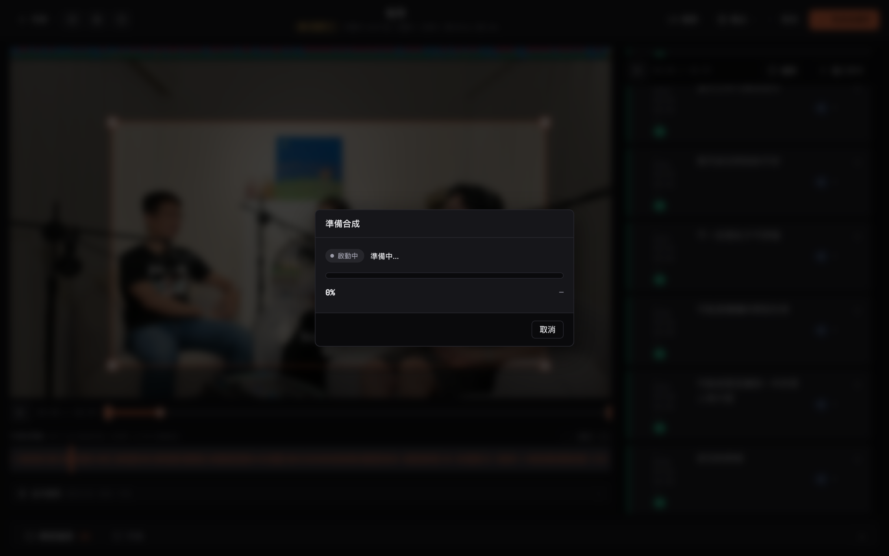
圖 32
合成進度。中間那行文字會依序換成不同階段，下方可以展開看實際的處理訊息。
階段依序是：
準備合成 ／準備素材中… ——檢查檔案、產生要用的中間檔
ffmpeg 啟動中（片頭 + 正片 + 片尾） ——開始實際編碼，這一段最久
合成完成 ／輸出已寫入 ——成功
點擊位置 成功後按在 Finder 開啟 會直接把你帶到成品檔案。失敗時視窗會顯示合成失敗 並出現重試 。中途想停就按取消 ，狀態會變成已停止 。
達成效果 成品固定寫進這一集的
03_成品/ 資料夾。展開ffmpeg 訊息 可以看到實際在跑什麼——出錯時真正的原因就在裡面，回報問題時把這一段附上最有用。
功能限制
合成期間不要關掉視窗或關掉 App 。中途取消的話，已經寫到一半的檔案不會保留。
一小時的節目在一般 Mac
上大約要跑十幾分鐘到半小時，跟機器與設定有關。另存字幕檔 模式因為跳過燒字幕，會明顯快一截。
合成 YT
版需要用到片尾音樂、片尾卡片這些共用素材 ，缺檔會直接失敗。在設定 視窗上半可以先確認這些檔在不在（見第 05 章）。
做完了。 到這裡你已經走完一整輪：開 App → 建一集 → 放素材 →
轉字幕 → 修字幕 → 排鏡頭 → 設定 →
出片。後面兩份附錄是查閱用的，不用從頭讀。
資料夾與檔案
每一集就是一個資料夾。知道哪個檔在哪，出問題時可以自己去看、自己備份。
位置
放什麼
你會需要動它嗎
01_母帶/你自己丟進去的原始素材：相機影片、錄音筆音檔
會 。建完一集就是把檔案放進這裡
03_成品/字幕檔、備份、以及合成出來的影片與音訊
會 。成品在這裡拿；想留字幕版本也在這裡複製
04_工作檔/處理過程中的中間檔
不用。工具自己管理，不要手動刪改
episode.yaml
這一集的所有設定：裁切、字級、頭尾、刪掉的段落、鏡頭切換、詞庫
平常不用——編輯器按完成並儲存 就是在寫它。只有極少數功能（例如雙行字幕）才需要手動開檔
03_成品/ 裡值得認得的幾個檔：
檔名
是什麼
{集名}_final_v2.srt
主字幕檔 。編輯器裡看到、改到的就是它，存檔也是寫回它
{集名}_final_v2.srt.bak
上一次存檔前 的字幕。只有一份，每次存檔覆蓋（見第 06 章）
{集名}_final_v2.speakers.json逐卡的講者對照。分軌轉錄才會有
{集名}_YT完整版.mp4合成出來的正式成品
{集名}_原速.mp3純音訊版本
資料夾裡還會看到別的備份檔 （檔名帶日期或其他後綴的
.srt）。那是進階工具留下的，跟編輯器的存檔沒有關係，不用管也不要靠它救檔。要保住某個版本，自己複製一份改名字最可靠。
疑難排解
按「症狀」找，不用管它屬於哪一章。
症狀
原因
怎麼辦
字幕裡人名、品牌名幾乎全錯
轉字幕之前沒有把這些詞填進詞庫
不必重轉。 用抽屜的字典 批次取代改掉，同時把這些詞補進詞庫 ，下一集就不會再錯（第 05、06 章）
按了全部套用 ，還是有些卡沒被改到
字典會整張跳過已經切過句 的卡，介面不會提示
順序改一下：先跑字典，再開始切句 。已經切過的只能手動改（第
06 章）
講者標從某一句開始整批對不上
這集沒登記分軌，而你做了切句／合併／插入／改時間造成重排
先在設定分軌 登記好各軌麥克風再編輯。已經歪掉只能重跑分軌設定與轉錄（第 06
章）
辛苦修的字幕全部變回原樣
對同一集重跑了轉字幕 ，這一集之前的字幕內容會整份被新的蓋掉
立刻不要再存檔 。到 03_成品/ 找檔名帶時間戳的
.bak.srt，挑轉字幕之前那個時間點、改回主字幕檔名。這種備份不會互相覆蓋，舊版本都還在（第
06、附錄 A）
按了套用偏移 ，未儲存數字沒歸零
這顆按鈕只存偏移這一個值，不會順便存別的
正常現象。其他修改還是要按完成並儲存
成品影片上一個字幕都沒有
字幕模式選成了另存字幕檔（僅 YT，較快）
這是該模式的正常結果，字幕另外出成一份檔案。要燒進畫面就改回燒進畫面 （第 08 章）
按合成沒反應，跳出提示要選字幕檔
字幕模式選了抽換字幕 但沒挑檔案
在字幕 旁的選單選一份，或改回其他模式
合成失敗
多半是缺共用素材，或素材檔本身有問題
展開ffmpeg 訊息 看實際錯誤；到設定 視窗上半確認共用素材都在（第 05、09 章）
影片畫面跟聲音對不上
對齊沒做，或算完了沒存
回鏡頭 視窗確認偏移數字有填。用過手動標記 的話，套用 之後還要按儲存 （第 07 章）
依講者推 A/B 按不動這集沒有逐卡講者資料
先跑分軌轉錄，才有講者可以拿來推鏡頭（第 07 章）
字幕整體早了或晚了一點
字幕與影片的起點差了一個固定值
用偏移 整份平移，不要一張張調（第 06 章）
關掉視窗，App 還在
關視窗不等於結束程式
按 ⌘Q 完全結束（第 02 章）